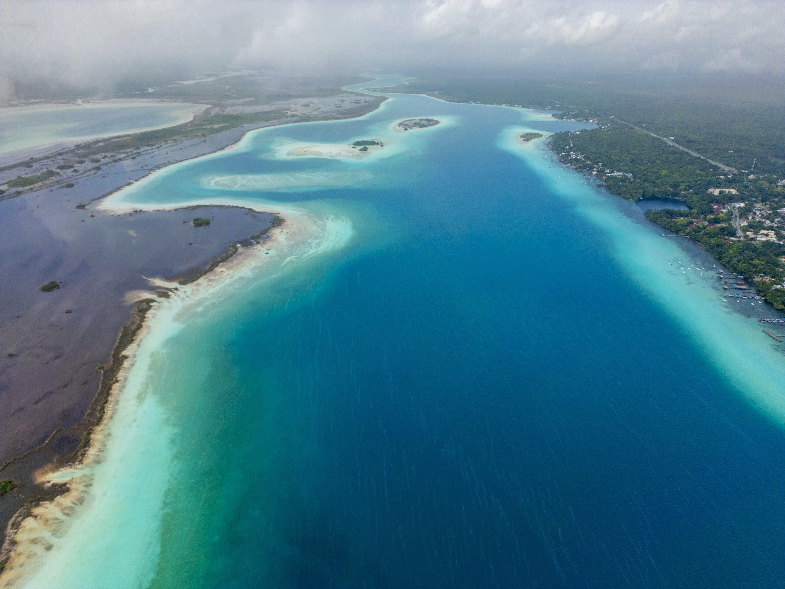
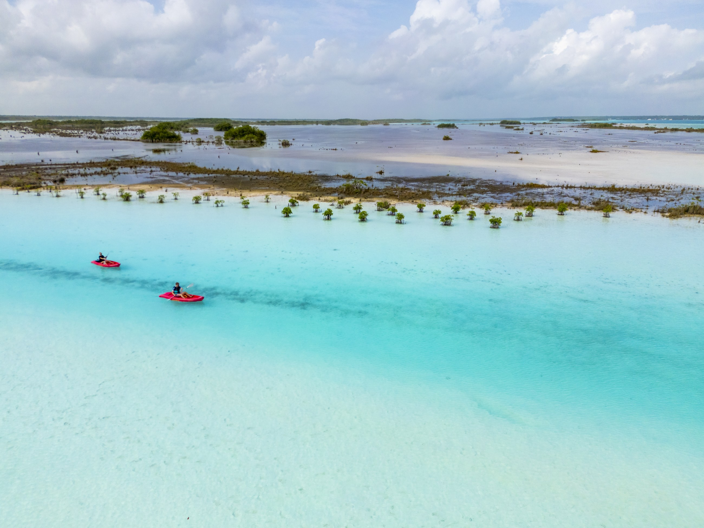
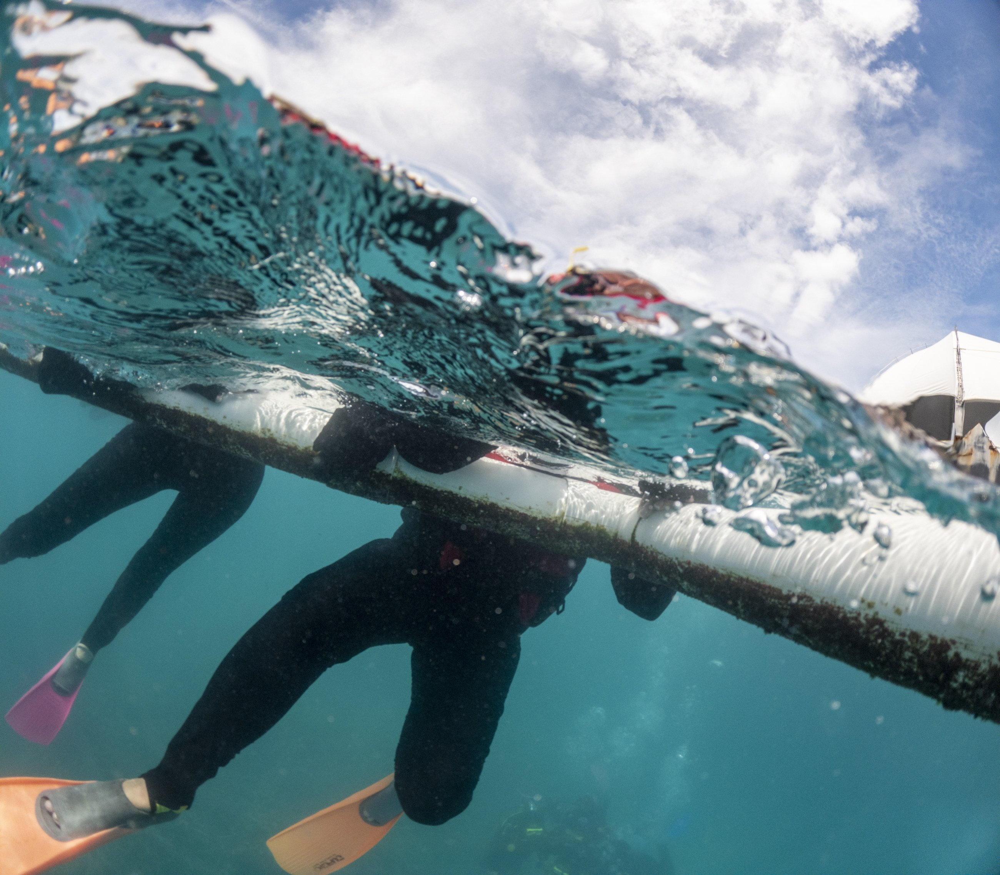
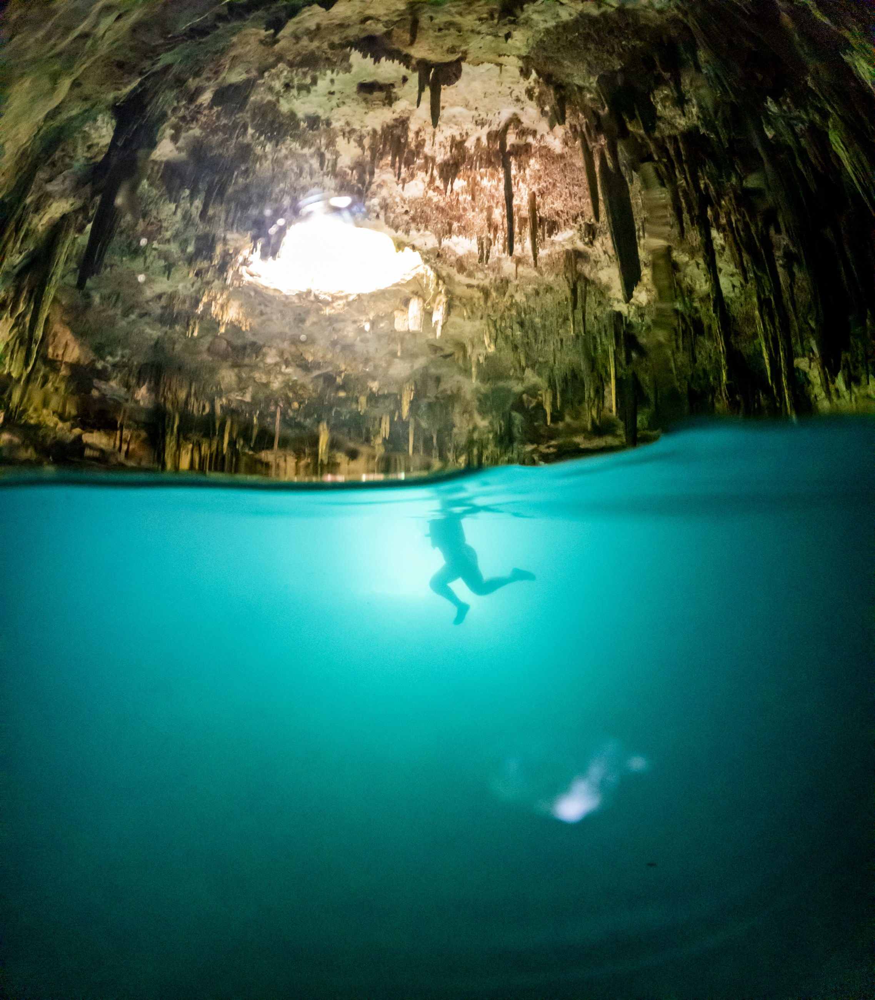

Images for your campaigns
Original photography and film for your team to use across your website, promotions and presentations for hotels and agents.

A CREATIVE PROPOSAL FOR CARIBBEAN LAKE PARK · FITUR 2027
Original photography and film to bring the action at Caribbean Lake Park to life.
EXPLORE THE PROPOSAL ↘01 / THE OPPORTUNITY
Caribbean Lake Park combines jet ski, aqua karts and buggies in Punta Cana. We propose a visual campaign that makes the activities and combinations easy for travellers, hotels and sales partners to imagine.
We would create new photography and film at your park, working with your team and local talent to show the energy of each activity and the experience around it.
EXPLORE THE PARK'S ACTIVITIES ↗02 / THE CAMPAIGN IDEA
Select an experience to see what we would create for the park.
Aerial views, close-up movement and the reactions of guests: a clear visual story of your water activities, created on location.
PROPOSED PRODUCTION · SUBJECT TO YOUR BRIEFCapture the buggy route, the vehicles and the energy of the ride so your customers can see what makes the experience exciting.
PROPOSED PRODUCTION · SUBJECT TO YOUR BRIEFFollow the journey from arrival and activities to the pool club, food and time together—helping partners present the full offer.
PROPOSED PRODUCTION · SUBJECT TO YOUR BRIEF03 / THE VISUAL APPROACH
A selection from Juan's archive, showing the perspective and visual language we could bring to a new production.



Portfolio photographs © Juan Aizpuru. These examples do not show Caribbean Lake Park or its activities. New material would be created at the park.
04 / WHAT WE OFFER
We travel to Punta Cana and create photography and film around the activities, packages and audiences you want to promote.
Original photography and film for your team to use across your website, promotions and presentations for hotels and agents.
We can also shape the campaign with your team and produce the story from concept through final edits.
Activities, talent, formats and production time are defined with you. We work with your team to plan access and capture the experience.
05 / THE PARTNERSHIP
Tell us which activities and audiences matter most. Together we define the story, production and uses. Juan retains authorship and ownership; usage rights and permissions are agreed for the project.
Choose the activity
and audience
Plan the shoot
with your team
Create original
photography and film
FITUR 2027 · MADRID
Álvaro, I would love to learn what Caribbean Lake Park wants to promote next and discuss how we can help.
VIEW MY PORTFOLIO ↗Connect with Juan Aizpuru on FITUR LiveConnect to arrange a meeting.